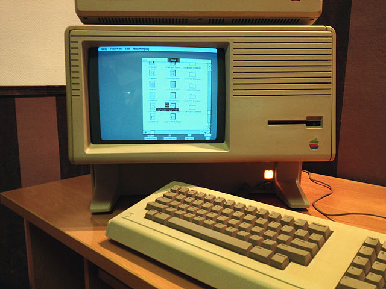
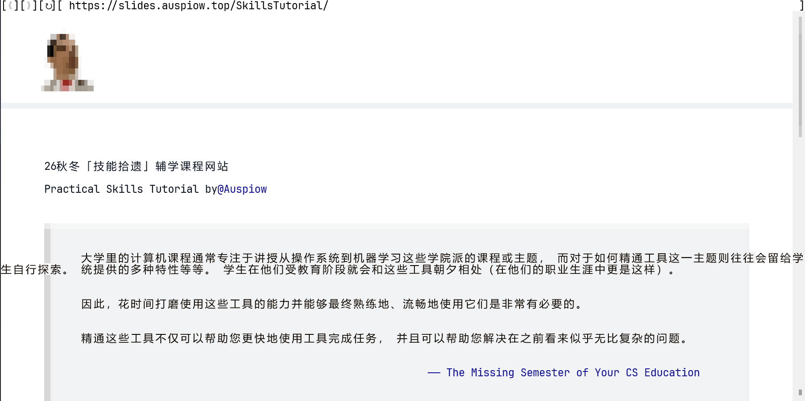
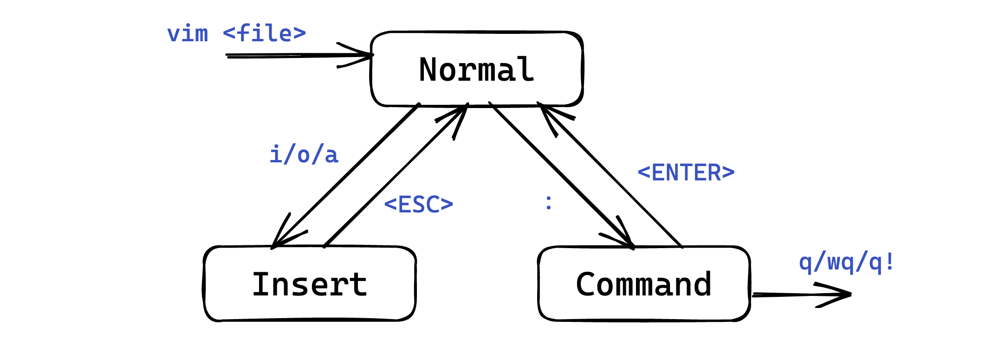
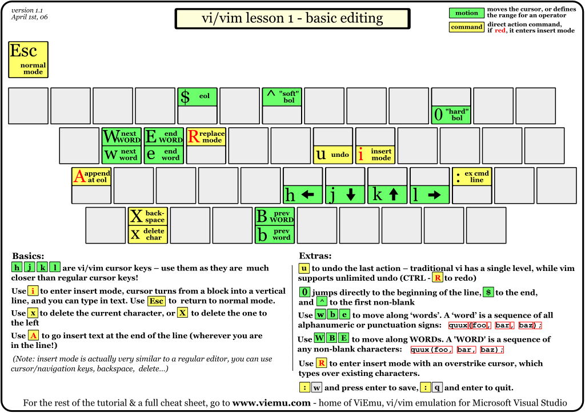
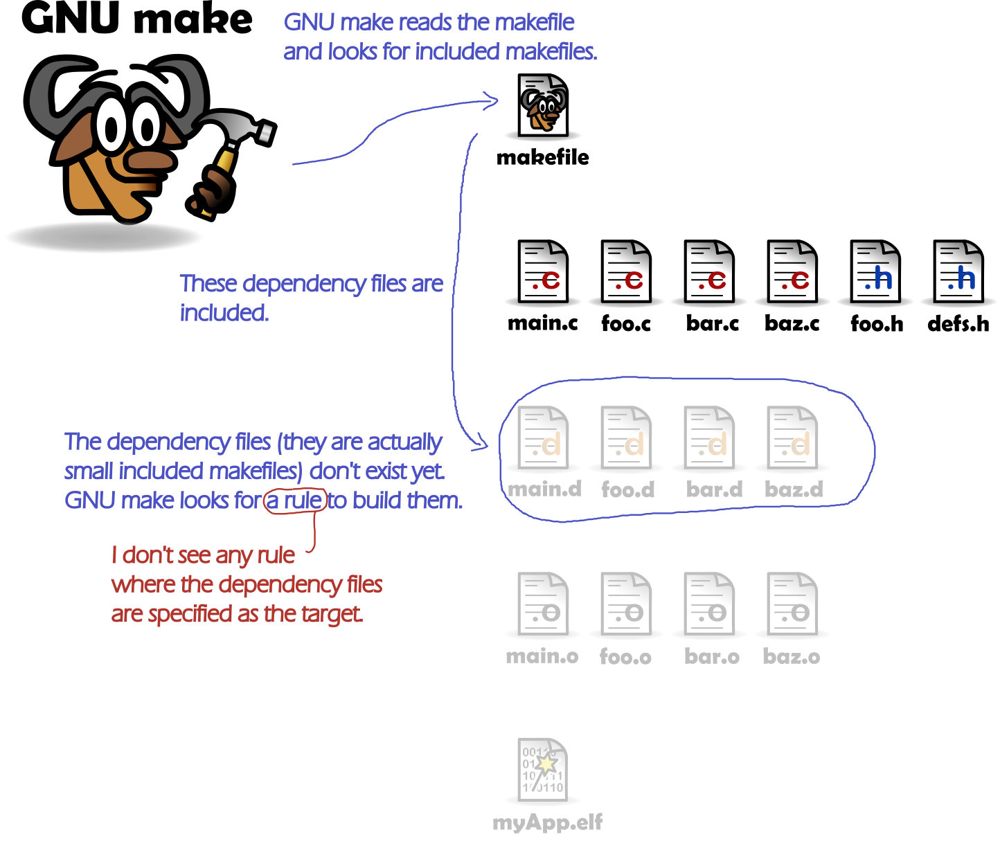

<div class="middle center cover"> <div style="width: 100%"> # Lec 2. Linux 及其工作流 <hr/> 2026 年秋冬学期计算机学院朋辈辅学「技能拾遗」 <div class="author"> <span>@Auspiow</span> </div> 2026年11月21日 <!--s--> <div class="middle center"> <div style="width: 100%"> # Part.1 Linux <!--v--> ## 主流计算机操作系统 * Microsoft Windows (1985.11.20) * macOS (2001.3.24) * Linux (1991.9.17) > Linux：我会为你提供一切必要的工具。请你为自己所敲的每一行命令负责。 > > macOS：我会尽可能地保护你。你可以不要我的保护，但若如此，请你为自己所敲的每一行命令负责。 > > Windows：我是你妈（[偷偷说了一些诋毁的话](https://slides.tonycrane.cc/PracticalSkillsTutorial/2023-fall-ckc/lec1/#/1/2)） <!--v--> ## Linux是怎么来的  1989 年，Linus Benedict Torvalds 进入芬兰陆军新地区旅。服役期间，购买了安德鲁·斯图尔特·塔能鲍姆所著的教科书及 minix 源代码，开始研究操作系统。 1990 年，他退伍后回到大学，开始接触 Unix。 <!--v--> ## Linux是怎么来的（2）  <span style="display: block; text-align: center;">[comp.os.minix](https://groups.google.com/g/comp.os.minix/c/dlNtH7RRrGA/m/24ODVoLfAgAJ), 1991.8.25</span> <!--v--> ## <ruby>图形化<rp>（</rp><rt>GUI</rt><rp>）</rp></ruby>的前世今生 <p></p> * (1973) Xerox PARC 研究小组：Xerox Alto * (1983) Steve Jobs “拿”来：Apple Lisa * (1984) X.Org 基金会：X 窗口系统（X11） * (1985) 微软：Windows 1.0 图片来源：[Álvaro Ibáñez, CC BY 2.0, Wikimedia](https://commons.wikimedia.org/wiki/File:Apple_Lisa_(Little_Apple_Museum)_(8032162544).jpg) What before? **D**isk **O**perating **S**ystems * (1978) Apple DOS * (1981) MS-DOS What after? 百花齐放 * Aqua, GNOME, KDE, LXDE, Xfce, ... <!--v--> ## 为什么用 Linux？ * 内核开源，社区维护 * Android OS * [torvalds/linux](https://github.com/torvalds/linux) * Free: as in Free Beer and Free Speech * 轻量级 * Alpine Linux 的 Docker 镜像仅 7 MB * 稳定性 * [亲手造成的运维事故：在 Live CD 环境下部署并运行了 8 个月](https://v2ex.com/t/974678) * 兼容性 * 树莓派等单板计算机 <!--v--> ## 主流的 Linux 发行版 * [Slackware](http://www.slackware.com/)：历史最悠久的发行版 * [Debian](https://www.debian.org/)：历史第二悠久的发行版 * [Arch Linux](https://archlinux.org/)：可高度自定义的发行版 * [Ubuntu](https://ubuntu.com/)：基于 Debian，最广泛使用的发行版 * [Deepin](https://www.deepin.org/index/zh)：基于 Debian 的国产操作系统 * [Red Hat Enterprise Linux](https://www.redhat.com/en/technologies/linux-platforms/enterprise-linux)：基于 CentOS 的商业发行版 * [Kali Linux](https://www.kali.org/)：基于 Debian，面向安全工作者的发行版 <!--v--> ## 成为linux糕手 推荐一些好玩的练习平台 * pwn.college: [Linux Luminarium.](https://pwn.college/linux-luminarium/) * SadServers: [Troubleshooting Scenarios: Linux Bash](https://sadservers.com/scenarios/topic/linux-bash) <!--s--> <div class="middle center"> <div style="width: 100%"> # Part 2. 什么是Shell <!--v--> ## Are you a Shell? - 一个黑黑的窗口？ - 一个输入奇怪命令的地方？ - 一个看起来很高级很黑客的界面？ <div class="fragment"> ❌ 这些都不是 Shell ❌ </div> <div class="fragment"> 这些描述所形容的窗口其实是 Terminal [What people think programming is vs. how it actually is](https://youtu.be/HluANRwPyNo) </div> <!--v--> ## 什么是 Terminal * 早期计算机没有桌面环境，唯一的交互方式是键盘 * 用于输入数据，运行程序，并获得输出的“终端” > sense of "device for communicating with a computer" is first recorded 1954. > > -- [在线语源学词典 (Online Etymology Dictionary)](https://www.etymonline.com/word/terminal) * Terminal Emulator，模拟传统终端的行为 * 一个应用程序，提供输入输出交互的功能 * 内部运行的是 Shell，Shell 才是执行命令得到输出的东西 <!--v--> ## 常见的 Terminal - **Windows**：Windows Terminal（推荐） - **Linux**：Gnome Terminal、Konsole、LXTerminal 等 - **macOS**：Terminal.app、iTerm2（推荐）等 - 跨平台： - [Alacritty](https://alacritty.org)：基于 Rust 开发 - [Warp](https://warp.dev)：基于 Rust 开发 - [Hyper](https://hyper.is)：基于 Electron 开发 - ... <!--v--> ## So what is a Shell? - “壳层”，也是一个程序，是用户与系统内核交互的界面 - 负责接收并解析输入，交给更底层（操作系统）来执行，并返回输出  来源：[Wikipedia](https://zh.wikipedia.org/wiki/%E6%AE%BC%E5%B1%A4#/media/File:%E6%AE%BC%E5%B1%A4.png), CC_BY-SA_4.0 <!--v--> ## 常见的 Shell - Windows 下：cmd.exe、PowerShell 5 - \*nix 下： - **sh**：Bourne Shell，最早、最经典的 shell - **bash**：Bourne Again Shell，最常用的 shell - 大部分 Linux 发行版的默认 shell - **zsh**：Z Shell，功能强大、可高度自定义的 shell - macOS Catalina 起成为默认 shell - **fish**：Friendly Interactive Shell，开箱即用、全平台的 shell - <ruby>ash<rp>(</rp><rt>Almquist Shell</rt><rp>)</rp></ruby>, <ruby>csh<rp>(</rp><rt>C Shell</rt><rp>)</rp></ruby>, <ruby>ksh<rp>(</rp><rt>Korn Shell</rt><rp>)</rp></ruby>, nushell, <ruby>pwsh<rp>(</rp><rt>PowerShell 7</rt><rp>)</rp></ruby> ... </div> <!--v--> ## Shell 与 Terminal - Terminal 从用户获取输入，然后传递给 Shell，等待 Shell 处理完后，将结果再传递回用户（显示在屏幕上） - Shell 从 Terminal 拿到输入指令，解析后交给操作系统执行，然后将结果返回给 Terminal 一些例子： - \*nix 系统下，用户默认的 shell 可以随意更换 - Ctrl-C 到底是复制还是中断程序？ - 和 Shell 无关，是 Terminal 的行为 - 比如 macOS 上 iTerm2 就可以随意更改按键的这些行为 - 如果定义了 `^C` 应该复制，那么 Terminal 就会直接复制内容到剪贴板 - 如果定义了 `^C` 应该中断程序，那么 Terminal 就告诉 Shell，Shell 再通过 SIGINT 信号通知内核中断程序 <!--v--> ## 关于命令行 - 命令行也是一种操作计算机的方式，手在键盘上就能控制电脑，而不需要鼠标点来点去 - 在没有显示器的机器上（例如通过 ssh 连接服务器），只能通过命令行操作 一个夸张的例子：你甚至可以在命令行中查看网页！[fathyb/carbonyl](https://github.com/fathyb/carbonyl) ``` carbonyl https://slides.auspiow.top/SkillsTutorial/ ``` <div style="text-align: center;"> <p></p> </div> <!--v--> ## 为什么要用命令行？ 别再用 Dev-C++ 写程序了，尽早使用 VSCode 与命令行 gcc ```shell $ cat hello.c #include <stdio.h> int main(void) { puts("Hello world!"); } $ gcc hello.c -o hello $ ./hello Hello world! ``` <!--v--> ## \* 关于 zsh 的一些推荐配置 - oh-my-zsh：<https://ohmyz.sh>，一个 zsh 的配置框架，支持主题、插件等配置 > Oh My Zsh will not make you a 10x developer...but you may feel like one! - Powerlevel10k（p10k）：一个 oh-my-zsh 的主题，配置简单，美观 - 插件： - git：oh-my-zsh 自带插件，提供 git 相关的自动补全与 alias - sudo：oh-my-zsh 自带插件，按两次 Esc 自动添加 sudo - zsh-autosuggestions：自动提示输入过的历史命令 - zsh-syntax-highlighting：命令语法高亮 - ... 具体安装方法等可参考：<https://note.tonycrane.cc/cs/tools/shell/> <!--s--> <div class="middle center"> <div style="width: 100%"> # Part 3. 基础 Shell 命令 <!--v--> <!-- .slide: data-background="lec1/background.png" --> ## Prompt 能告诉我们什么 - Prompt 即命令提示符，用来等待输入并给你提供一些信息 - 其中最重要的信息就是<ruby>**工作路径**<rp>（</rp><rt>Working directory</rt><rp>）</rp></ruby>，是当前 shell 所处的“位置” - 一定要时时刻刻知道自己“在哪里” - ⚠️ <span style="color: red">`sudo rm -rf ./*`</span> - 通常还要有的信息是当前正在操作的**用户** - 和权限有关，比如普通用户还是 `root` 等 - *nix 下的路径分隔符是 `/`，Windows 下是 `\` - 怎么没有 `C:\`？ - Windows 下有多个“根目录”，即不同“盘符”，比如 `C:\`、`D:\` 等 - \*nix 没有分盘概念，所有的文件都挂载在唯一的根目录 `/` 下 - WSL 通常会自动把 Windows 的盘符挂载到 /mnt 下 ``` cd /mnt/c/Users/lry/Desktop ``` <!--v--> ## 路径相关命令 - pwd：获取当前路径 (print working directory) - cd *path*：切换路径 (change directory) - *path* 可以是“相对路径”或者“绝对路径” - *path* 中 `~` 代表 home，`.` 代表当前路径，`..` 代表上一级路径 <div class="fragment"> 如何从 `/home/lry/` 进入 `/usr/bin/` - 绝对路径：`cd /usr/bin` - 相对路径：`cd ../../usr/bin` </div> <div class="fragment"> 如何从 `/usr/` 进入 `/usr/games/` - 绝对路径：`cd /usr/games` - 相对路径：`cd games` 或者 `cd ./games` </div> <!--v--> ## 文件/目录操作命令 - ls：列出当前路径下的文件和目录 - `-a`：列出所有文件和目录，包括隐藏文件 - `-l`：列出详细信息（文件权限，大小，修改时间，...） - touch *file*：创建一个文件 - mkdir *dir*：创建一个目录 - cp *src* *dst*：复制文件或目录 - -r：递归复制目录 - mv *src* *dst*：移动文件或目录（重命名） - rm <em>files...</em>：删除文件 - -r：递归删除目录；-f：强制删除 - find *path* -name *pattern*：在 *path* 下查找文件名匹配 *pattern* 的文件 <!--v--> ## 文件内容查看命令 - cat <em>files...</em>：输出与拼接文件 - -n：带行号输出 - head *file*：输出 *file* 前 10 行 - -n *lines*：输出 *lines* 行 - tail *file*：输出 *file* 后 10 行 - -n *lines*：输出 *lines* 行 - more/less *file*：分页输出 *file* 内容 - 空格翻页，回车下一行，q 退出 - `less` 的功能更多，比如查找，更好的翻页等，用法见 `less --help` - hexdump *file*：以十六进制输出文件内容 - -C：并排输出十六进制与 ASCII - -n *N*：输出前 *N* 个字节 <!--v--> ## 其他命令 - man：查看命令文档（manual） - echo：输出字符串（常配合重定向/管道使用） - whoami：获取当前用户 - whereis/which/whence：查找命令所在位置 - clear：清屏 - chmod：更改文件权限 - ps：显示进程信息 - date：获取当前日期时间 - kill：杀死进程（向进程发送信号） - grep：搜索文件内容（常配合重定向/管道使用） - diff：比较文件/目录内容 - curl：发送 HTTP 请求；wget：下载文件 - ... <!--v--> ## 重定向 - 即文件流重定向 - 三种流：stdin 标准输入流，stdout 标准输出流，stderr 标准错误流 - 如何更便捷地将输出存入文件/将文件内容作为程序输入？通过重定向 - 通过 > *file* 将 stdout 重定向到文件，通过 < *file* 将文件重定向到 stdin - 通过 2> *file* 将 stderr 重定向到文件 - 2 是什么意思？stderr 的文件描述符 - 两个右箭头（大于号）>> 表示追加模式，即不覆盖原文件，而是追加到文件末尾 - 通过 &> *file* 将 stdout 和 stderr 都重定向到文件 <div class="fragment"> 常见用法： - echo "Hello world" > *file*：将字符串 Hello world 写入 *file* - cat *file1* *file2* > *file3*：将 *file1* 和 *file2* 拼接，输出到 *file3* - diff *file1* *file2* > *file3*：将 *file1* 和 *file2* 的差异写入 *file3* - ./a.out < *file*：将 *file* 作为 a.out 的输入 </div> <!--v--> ## 管道 - 通过管道（pipe）可以将一个命令的输出作为另一个命令的输入 - 使用管道操作符 |，将左侧命令的 stdout 连接到右侧命令的 stdin - 通过管道可以将多个命令连接起来，形成一个命令序列，可以通过一行命令来完成相对复杂的操作（e.g. [SadServers](https://sadservers.com) Saskatoon） ```bash $ cat /home/admin/access.log | cut -d ' ' -f 1 | sort | uniq -c | sort | tail -n 1 ``` - 复杂命令看不懂？推荐 [explainshell](https://explainshell.com) 常见用法： - *some cmd* | tail -n *lines*：只输出最后 *lines* 行 - *some cmd* | less：分页输出 - *some cmd* | grep *pattern*：在输出中查找匹配 *pattern* 的行 - 与 cut / sort / uniq / awk 等命令搭配，处理文本数据 - ... <!--v--> <!-- .slide: data-background="lec1/background.png" --> ## 环境变量 - 记录了系统信息的变量，可供程序读取 - 通过 echo $*var* 来输出某一环境变量的值，`env` 命令查看所有环境变量 - 一个关于环境变量和 shell 命令执行的例子 - 🤔 命令是什么（例如 `ls`）？ - -> 绝大部分都是可执行文件（`/bin/ls`），执行命令就是执行程序 - 🤔 为什么 shell 可以只通过 `ls` 就找到 `/bin/ls` 这个可执行文件？ - -> 在 `PATH` 环境变量中查找 - 🤔 为什么一定要用 ./a.out 而不是 a.out 来执行程序？ - -> 因为 .（即当前目录）并不在 `PATH` 变量中 - 设置环境变量 - export *var*=*value*：设置环境变量 - 仅在当前执行的 shell 中有效。如何持久化？写入配置文件 - unset *var*：删除环境变量 <!--v--> <!-- .slide: data-background="lec1/background.png" --> ## \* Bonus：C 语言中如何读取环境变量？ ```c int main(void); // int main(); int main(int argc, char *argv[]); int main(int argc, char *argv[], char **envp); ``` <br> <div class="fragment"> ```c #include <stdio.h> // 依次输出所有的环境变量 int main(int argc, char *argv[], char **envp) { while (*envp) printf("%s\n", *envp++); } ``` </div> <!--v--> ## \* 配置文件 - 本质上是在加载 shell 时执行的一些脚本文件 - 比如 Linux 上 bash 在启动时会依次加载（执行）以下文件（有省略）：<br> /etc/environment -> /etc/profile -> ~/.profile -> ~/.bashrc - 所以只要将 export 语句写入以上文件中的一个（一般是 ~/.bashrc）以后用 bash 就会自动设置环境变量 - 设置了 shell 的配置文件后，重开新 shell 才会有效果 - 不想重开？可以使用 source *file* 来立刻加载某一配置文件 - 相当于在当前 shell 直接执行这个文件的内容 - 除了 shell 的配置文件外，其他程序的配置文件也经常存放在 home 下 - 且通常以 . 开头（隐藏） - 比如后面会说到的 ~/.vimrc <!--v--> ## More? - 返回值？ - 条件判断？ - 循环？ - 命令嵌套？ - 函数？ <br> Further reading: - 🏆 [The Missing Semester - Shell Tools and Scripting](https://missing.csail.mit.edu/2020/shell-tools/) - [OCF Lecture 2 - Shell Scripting](https://docs.google.com/presentation/d/1SYoC8j1qiM4CuhSArouJbhLpUfDAfyuFMF8r7R4Y0_Y) <!--s--> <div class="middle center"> <div style="width: 100%"> # Part.4 vim 基础用法 <!--v--> ## 什么是 vim？ - vi 和 vim？ - vi: 由 `ex` 发展而来的老牌文本编辑器 - vim: Vi IMproved，vi 的升级版，功能更强大 - [Bram Moolenaar](https://en.wikipedia.org/wiki/Bram_Moolenaar), 1961 - 2023.8.3 - 基于命令行的全平台文本/代码编辑器 - 如何在你的电脑上使用 vim - Linux/macOS：直接通过包管理器（apt/yum/brew 等）安装 - Windows： - 使用 WSL，在里面安装 vim - 使用 [Gvim](https://www.vim.org/download.php) 或 [Neovim](https://neovim.io) - VSCode 的 [vim 插件](https://marketplace.visualstudio.com/items?itemName=vscodevim.vim)也是一个选择 - Neovim：vim 的一个 fork，可配合 [LunarVim](https://www.lunarvim.org) 开箱即用 <!--v--> ## 模式 - vim 中有多种模式，可以让你只通过键盘就完成各种操作 - 常用模式： - Normal 模式：默认模式，用于移动光标、处理文本、执行命令等 - Insert 模式：用于输入文本 (i) - Command 模式：用于执行命令 (:) - \* Visual 模式：用于选择文本 (v) <div style="text-align: center; margin-top: 0.5em;"> <p></p> </div> 来源：[Shell 基础及 CLI 工具推荐 by @45gfg9](https://slides.tonycrane.cc/PracticalSkillsTutorial/2023-fall-ckc/lec1/#/4/2) <!--v--> ## Cheat Sheet [Cheat Sheet](https://slides.tonycrane.cc/PracticalSkillsTutorial/2023-fall-ckc/lec1/#/4/3) * 打开和退出 Vim (:wq!x) * 光标操作 (hjkl 左下上右 gg G) * 插入和编辑文本 (i/I a/A o/O) * 删除、复制和粘贴 (dd yy p) * 撤销和重做 (u ^r .) <!--v--> ## vim 基础操作 - 同系列更多教程图片见 [ViEmu](http://www.viemu.com/a_vi_vim_graphical_cheat_sheet_tutorial.html) <div style="text-align: center; margin-top: 0.5em;"> <p></p> </div> <!--v--> ## \* vim 配置文件 - 通过 ~/.vimrc 文件来进行配置 - 45gfg9的几条简单配置： ```text syntax on " 启用语法高亮 colorscheme slate " 颜色主题 set tabstop=4 " Tab 算作的空格数 set expandtab " 用空格替换 Tab set softtabstop=4 " 输入 Tab 时替换的空格数 set shiftwidth=4 " 自动缩进空格数 set autoindent " 自动缩进 set smartindent " 智能缩进 set number " 行号 set ruler " 显示光标所在行列 set scrolloff=3 " 光标上下两侧保留的行数 set showmatch " 提示配对的括号 set hlsearch " 高亮显示搜索结果 set incsearch " 实时显示搜索结果 ``` <!--v--> ## vim 学习资源 - 🏆 自带教程：vimtutor 命令 - [Vim Adventures](https://vim-adventures.com)：通过游戏的方式学习 vim - Cheat Sheets: - [vimcheatsheet.com](https://vimcheatsheet.com) - [ViEmu](http://www.viemu.com/a_vi_vim_graphical_cheat_sheet_tutorial.html) - [vim.rtorr.com](https://vim.rtorr.com/lang/zh_cn) 在线文字版 - Vim 从入门到精通：[wsdjeg/vim-galore-zh_cn](https://gitlab.com/wsdjeg/vim-galore-zh_cn) <!--s--> <div class="middle center"> <div style="width: 100%"> # Part.5 GNU Make 简介 <!--v--> ## 为什么要用 `make`？ - 一个词来说就是：**自动化** - 只需要写一个 Makefile，就可以通过一句命令来自动化地完成编译、测试、打包、部署等一系列操作 - 即使是 Linux 内核，也可以通过一句 `make` 来完成编译 - 不仅仅用来编译 C/C++，任何命令都可以执行 - 比如说在编写本课程 slide 的时候，就是用 make 来简化输入命令的 - 有些时候会比 shell 脚本更容易编写 - 处理依赖、读取命令行输入等 make 都会帮你完成 ```bash sudo apt install make ``` <!--v--> ## 为什么要用 `make`？ <div style="text-align: center; margin-top: 0.5em;"> <p></p> </div> <!--v--> ## 简介：如何编写 Makefile ```make target: prerequisites... commands... commands... ``` - target: 目标文件/可执行文件/标签 - .PHONY 定义伪目标 ```make .PHONY: clean ``` - prerequisites: 依赖的 target - command: 一系列执行的命令 - 即触发 target 时执行的 shell 命令 - 开头加 `@` 不会在终端输出命令本身 - 开头加 `-` 会忽略命令执行失败的错误，继续向下执行 <!--v--> ## 简介：如何编写 Makefile ```make [|1|3-4|6-7] CFLAGS = -std=c99 main.out: main.o aux.o gcc $^ -o $@ $(CFLAGS) %.o: %.c gcc -c $< -o $@ $(CFLAGS) ``` 这段 Makefile 干了什么？ - 定义了一个变量：`CFLAGS`，值为 "-std=c99" - 定义了产生 `main.out` 的步骤 - 定义了从 `.c` 文件产生 `.o` 文件的步骤（编译） <!--v--> ## 简介：Makefile 变量 - 变量定义： | 语法 | 解释 | | --- | --- | | `VAR = value` | value 会在使用时才被展开（可以在文件任何位置） | | `VAR := value` | 右边的 value 会在定义时就被展开 | | `VAR ?= value` | 如果 VAR 未定义，则定义为 value | | `VAR += value` | 将 value 追加到 VAR 的末尾 | - 变量引用： - `$(VAR)` 或 `${VAR}`：引用变量 VAR - 会以“字符串”的形式展开（类似 C 中的宏展开） - 可以通过 $(shell *command*) 来将 *command* 的输出结果作为替换的值 - Make 内置某些变量，如 `$(PATH)`、`$(MAKE)` <!--v--> ## 简介：make 命令 - make 后面可以跟多个 target，指定执行的内容 ```shell $ make a.o b.o c.o ``` - 如果不跟任何 target，则默认执行 Makefile 中定义的第一个 target - 可以在 make 后面直接通过 `VAR=value` 的形式来定义变量 ```shell $ make a.o CFLAGS="-std=c11 -Wall" ``` - 优先级：make 的参数 > Makefile 中的定义 > 环境变量 - make 命令的常用参数： - make -f *FILE*：指定 Makefile 文件 - make -n：只显示命令，而不实际执行（dry-run） - make -j *N*：并行执行 *N* 个任务 - make -k：忽略错误，继续执行 <!--v--> ## More? - 条件判断？ - 函数？ - 模式规则？模式变量？ - 隐含规则？隐含变量？ - 自动化变量 `$@` 等？ <br> Further reading: - 🏆 和我一起写 Makefile：[seisman/how-to-write-makefile](https://seisman.github.io/how-to-write-makefile/) - GNU make 官方文档：[GNU make](https://www.gnu.org/software/make/manual/make.html) <!--s--> <div class="middle center"> <div style="width: 100%"> # Part.6 其他命令行工具推荐 <!--v--> ## 一些推荐的命令行工具 - [sharkdp/bat](https://github.com/sharkdp/bat)：类似于 cat 的命令行工具，支持语法高亮（Rust 实现） - [sharkdp/fd](https://github.com/sharkdp/fd)：增强版 find（Rust 实现） - [sharkdp/hexyl](https://github.com/sharkdp/hexyl)：更美观的命令行十六进制查看器（Rust 实现） - [eza-community/eza](https://github.com/eza-community/eza)：增强版 ls（Rust 实现） - [ajeetdsouza/zoxide](https://github.com/ajeetdsouza/zoxide)：增强版 cd，自带 autojump 功能（Rust 实现） - [BurntSushi/ripgrep](https://github.com/BurntSushi/ripgrep)：更快的 grep（Rust 实现） - [root-project/cling](https://github.com/root-project/cling)：交互式 C++ 解释器 - [FFmpeg/FFmpeg](https://github.com/FFmpeg/FFmpeg)：强大的命令行音频、视频及字幕处理套件 - [ImageMagick/ImageMagick](https://github.com/ImageMagick/ImageMagick)：强大的图片处理、转换及编辑套件 - [aristocratos/btop](https://github.com/aristocratos/btop)：类似 top 的命令行资源监控工具~~（看门老大爷看板）~~ - [dylanaraps/neofetch](https://github.com/dylanaraps/neofetch)：更漂亮地显示系统信息~~（装逼专用）~~ - [tldr-pages/tldr](https://github.com/tldr-pages/tldr)：man 替代品，命令速查 <!--s--> <div class="middle center cover"> <div style="width: 100%"> # 谢谢大家 <hr/> Questions? <div class="author"> <span>@Auspiow</span> </div> 2026年11月21日